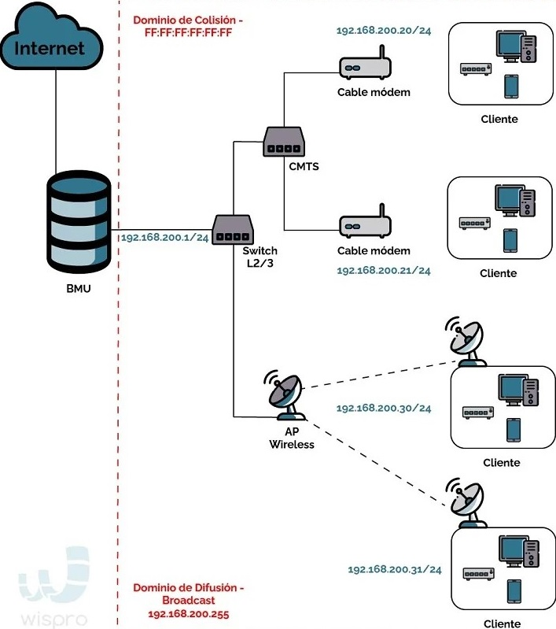

Historia y evolución de las redes informáticas
12 de Mayo 2024 por Gabriela CortesEl mundo atrapado por una telaraña: desde su surgimiento, las redes han evolucionado conforme lo demandan las necesidades de comunicación, verbal o visual. He aquí un recuento de la aparición de los diferentes dispositivos que componen una red. Las primeras redes comerciales se valían del protocolo Arcnet (Attached Resource Computer Network), desarrollado por Datapoint Corporation, alrededor de 1980. Utilizaba cable coaxial y empleaba conexiones de 2.5 Mbps, en ese tiempo considerada alta velocidad, ya que los usuarios estaban acostumbrados a compartir información vía puerto paralelo o serial, donde la transmisión era muy lenta.
Se puede decir que las redes informáticas tal y como las conocemos hoy en día empezaron con el desarrollo de ARPANET a finales de la década de los 60s. Algo con lo que ya se había teorizado desde muchos años antes, pero que culminó en 1969 con la primera transferencia de datos entre dos ordenadores situados a más de 600km de distancia.
Antes de ese momento, existían redes de proveedores de ordenadores diseñadas principalmente para conectar terminales o estaciones de trabajo remotas a un ordenador central.
Función en ráfagas
Para poder llevar el concepto de ARPANET a la práctica, Leonard Kleinrock fue el responsable de investigar y desarrollar la técnica de conmutación de paquetes. Gracias a su desarrollo se podían compartir de manera eficiente los recursos de comunicación entre usuarios situados en distintas ubicaciones.
Una historia que comienza a mediados del siglo XX y no para de aportar nuevas mejoras e implementaciones hasta la actualidad. ¿Qué nos depara el futuro? Pues suponemos que muchos años más de evolución para hacer que la transferencia de datos a través de las redes informáticas sea todavía más rápida y eficiente.
El futuro de las redes informáticas
El futuro de las redes informáticas pasa por la innovación y la mejora de los sistemas y redes de telecomunicaciones. Un futuro que, además necesita profesionales especializados como tú.
Un campo en constante evolución y en constante transformación que te va a dar la oportunidad de crecer a nivel personal y profesional.
Cronología de la evolución de las redes informáticas
Vamos a ver algunas de las fechas más importantes en la historia y evolución de las redes informáticas. Se trata de hitos tecnológicos y momentos muy importantes que sirven para entender su actual relevancia y el potencial de cambio que tendrán en el futuro las redes.
• -1961. La idea de ARPANET, una de las primeras redes de ordenadores, fue propuesta por Leonard Kleinrock en un artículo titulado: “Information Flow in Large Communication Nets.”
• -1969. Internet nació oficialmente, con la primera transmisión de datos enviada entre UCLA (Universidad de California) y el SRI (Instituto de Investigación de Standford)
• -1973. La primera conexión de red internacional, llamada SATNET, fue implementada en 1973 por ARPA.
• -1978. Bob Kahn inventó el protocolo TCP / IP para redes.
• -1981. El protocolo de Internet versión 4, o IPv4, se definió oficialmente en 1981. IPv4 fue la primera versión importante del protocolo de Internet.
• -1981. BITNET se creó en 1981 como una red entre los sistemas de IBM en los Estados Unidos.
• -1983. ARPANET finalizó la transición al uso de TCP / IP en 1983.
• -1984. Se funda CISCO, que se convertiría en una de las mayores empresas de instalación y mantenimiento de redes.
• -1988. La tecnología de red WaveLAN, precursora oficial de Wi-Fi, fue introducida al mercado por AT & T, Lucent y NCR en 1988.
• -1988. Los detalles sobre la tecnología de cortafuegos de red se publicaron en un artículo que analizaba el primer cortafuegos, llamado cortafuegos de filtro de paquetes.
• -1990. Kalpana, una empresa de hardware de red estadounidense, desarrolló e introdujo el primer conmutador de red en 1990.
• -1996. IPv6 se introdujo en 1996 como una mejora sobre IPv4, incluida una gama más amplia de direcciones IP, enrutamiento mejorado y cifrado integrado.
• -1999. El estándar 802.11a para Wi-Fi se hizo oficial en 1999, diseñado para usar la banda de 5 GHz y proporcionar velocidades de transmisión de hasta 25 Mbps.
• -2003. El protocolo de encriptación WPA2 se introduce como una mejora y reemplazo de WPA.
• -2009. El estándar 802.11n para Wi-Fi se hizo oficial. Proporciona velocidades de transferencia superiores a 802.11ay 802.11g, y puede funcionar en anchos de banda de 2,4 GHz y 5 GHz.
• -2018. Wi-Fi Alliance introdujo el cifrado WPA3 para Wi-Fi, que incluye mejoras de seguridad sobre WPA2.